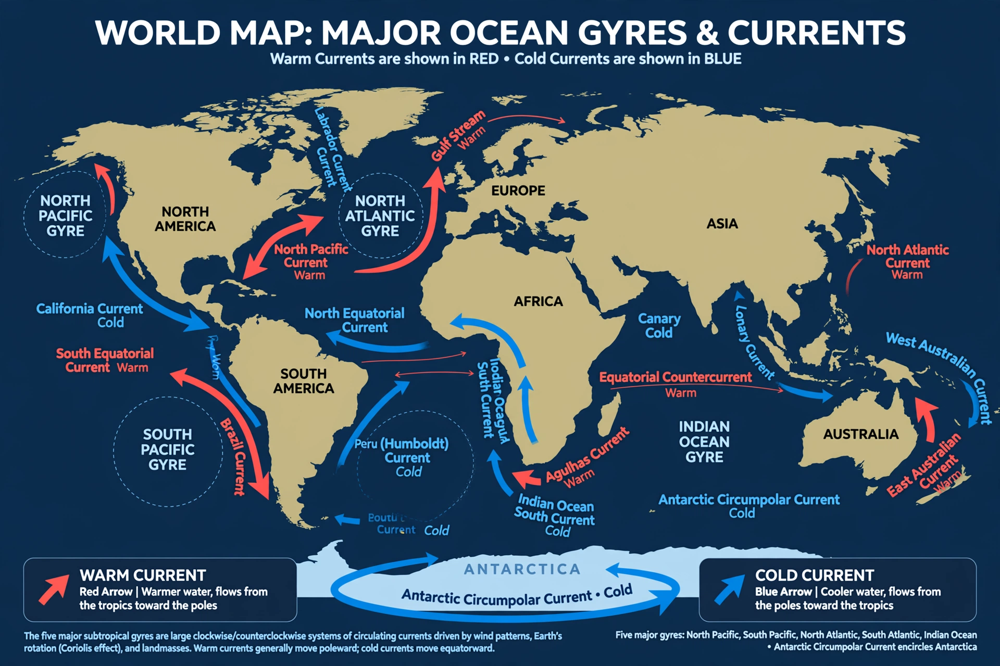

Ocean current

An ocean current is a continuous, directed movement of seawater, driven by wind, by differences in temperature and salinity, by tides and by the shape of the ocean basins. Currents range from local tidal streams to globe-spanning flows that carry more water than all the world's rivers combined.
Surface currents are mainly wind-driven and organise into great circular gyres in each ocean basin; deep currents form the slow, density-driven {L('Thermohaline_circulation','thermohaline circulation')} that ventilates the abyss over centuries.
The great currents
Warm western boundary currents — the Gulf Stream in the Atlantic, the Kuroshio Current in the Pacific and the Agulhas Current in the Indian Ocean — rush poleward along the western edges of ocean basins, intensified by Earth's rotation and the basin-scale wind patterns. Cold currents return water equatorward along eastern boundaries, such as the California, Canary, Peru (Humboldt) and Benguela currents, whose cold upwelling waters support immense fisheries.
Around Antarctica the Antarctic Circumpolar Current flows unimpeded around the continent, the largest current of all, linking the world's oceans.
Role in climate
Currents move heat from the tropics toward the poles on a planetary scale, softening climates (north-western Europe is far milder than its latitude suggests) and setting patterns of rainfall and desert. They also transport nutrients, larvae, pollutants and debris, and they couple the ocean to climate variability such as {L('El_Niño')}.
Oceanographers measure currents with drifters and floats (notably the Argo array), satellite altimetry that senses sea-surface height, moored instruments and ship surveys.
See also: Gulf Stream · Kuroshio Current · Agulhas Current · Thermohaline circulation · Ocean · El Niño